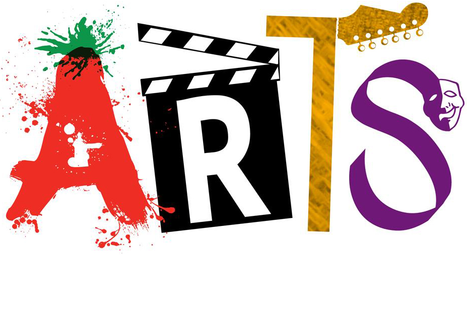

Culture plays an important role in the development of any nation. It represents a set of shared attitudes, values, goals and practices. Culture and creativity manifest themselves in almost all economic, social and other activities. A country as diverse as India is symbolized by the plurality of its culture.
India has one of the world’s largest collections of songs, music, dance, theatre, folk traditions, performing arts, rites and rituals, paintings and writings that are known, as the ‘Intangible Cultural Heritage’ (ICH) of humanity. In order to preserve these elements, the Ministry of Culture implements a number of schemes and programmes aimed at providing financial support to individuals, groups and cultural organizations engaged in performing, visual and literary arts etc.
This section offers comprehensive information related to cultural heritage, ancient monuments, literary arts, visual arts, schemes, programmes, performing arts, fairs and festivals and handicraft of India. Detailed information on various organizations involved in promotion and propagation of Indian art and culture is also available in this section.
Important Links
Website of Allahabad Museum
Website of Rampur Raza Library
Website of National Monuments Authority